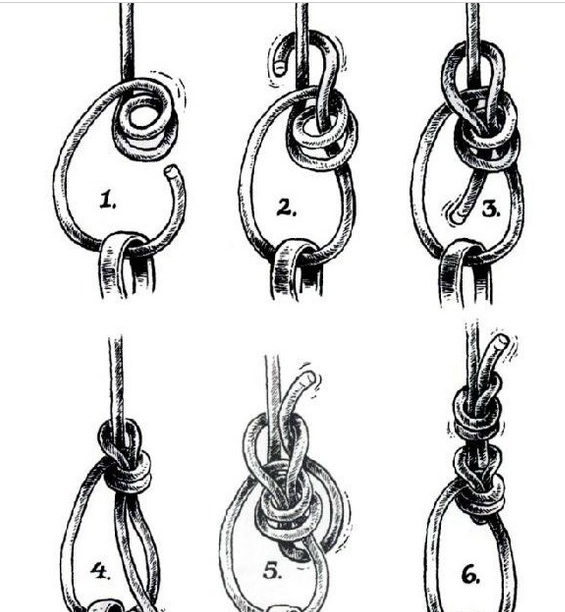

绳结技术学习
搜索到关于绳结讲得较全面的文章，包括各种绳结的用途、优点、缺点、风险、注意事项等等，为便于掌握得更熟练，整理记录在这里。
感觉日常生活中，主要涉及在车后座捆绑物品、连接绳索等，按使用频度主要以下几个：
- 1.布林结
- 2.平结+渔人结
- 3.结绳结
- 4.8字结
各类绳结打法及用途
- 原文:户外 胡较瘦 -> 【小驴TV】绳结技术大全 https://zhuanlan.zhihu.com/p/22767200
在攀登过程中，绳子要与其他保护装备、固定点以及绳子自身发生许多连接，以满足各种实际需要，这就出现了各种各样的绳结。
一根绳子是没有生命的，但一旦赋予它绳结，绳子就变得无所不能了。打绳结本省很容易，关键是要打正确，并明白它的用法和原理。更重要的是，要做到能根据户外的实际情况打出合理地绳结，这需要在实践中不断地练习。
户外绳结一般分为三种：
一，连接固定点的绳结； 二，连接绳子间的绳结； 三，下降用的绳结。
绳结的强度
首先讲下绳结强度的变化关系。打完结后绳子会扭曲，内心和表皮纤维受力不均，会削弱绳子原有的强度。
如果一条绳子在不打结的情况下强度是100%，那么在打成绳结使用时，其相对强度会发生变化，如下表：
| 绳结类型 | 相对强度(%) | 用途 |
|---|---|---|
| 无绳结 | 100 | |
| 8字结 | 70-75 | 连接攀登者的绳结 |
| 布林节 | 70-75 | 户外绳结之王，连接固定点 |
| 双渔人结 | 65-70 | 连接、抓结、防脱副保 |
| 单环节 | 65-70 | |
| 水结 | 60-70 | 连接扁带 |
| 单结 | 60-65 | 低强度、快速连接，不够安全建议不要使用 |
| 双套结 | 60-65 | 临时保护点 |
| 平结 | 45 | 收尾、接绳 |
连接固定点的绳结
8字结:连接攀登者的绳结
我们通常用8字结来连接攀登者，而且这个绳结直接与安全带连接起来才是最安全的，所以这个绳结也是目前攀岩正式比赛中唯一允许连接攀登者的绳结。
由于形似“8”字被称为8字结。
这个绳结一旦打错，后果是致命的，所以要求攀登者在离开地面之前一定要反复检查，确保万无一失。
-
优缺点
容易打，强度高，易检查； 受力后不易解开。
- 注意事项
在攀登过程中，8字结使用的最频繁，攀登者一定要注意一下事项：
（1）受力绳圈要尽量与安全带连紧。 （2）绳结连接的部位是安全带的攀登换，并非保护环或其他部位。 （3）打好结后，一定要将各部位调整顺滑，以保证均衡受力并易于检查。 （4）打好结后一定要将绳结收紧，松垮的外形是不安全的。 （5）绳尾做好末端处理（打好防脱）后，还要留出绳子直径8倍的长度，一般5-8厘米。 （6）攀登前一定要再次检查并确认无误。 （7）8字结的绳圈不能太大也不能太小，一般10厘米长。
8字结的打法打法分为将绳子对折后双股直接打的8字结、和利用单绳经过编织方式打的8字结。 其中第二种是在固定物不能直接套入”8“字结时采用的方法，打法就是先打个单”8‘字结，然后用多余绳头绕过固定物反穿回去即可。
- 双8字结
可以直接套入的固定点连接，主要用于连接攀登者安全带，也可用于结组攀登的中段结组绳结。

- 反穿8字结
先用单绳打一个单8字结，将多余绳头绕过固定点后，直接用绳头反穿，最后打个防脱即可。
用于无法直接套入的固定点连接，以及有时多人结组者两端绳头的结组结。
- 对穿8字结
还有一种用法，就是连接两根直径相同的绳子，叫对穿“8”结（如下图3），即先单绳打好一个“8’字结然后，用另一根绳子对穿回来。对穿完成后，一定要在两端绳头打半结防脱。

- 单向穿8字结
这个结只可在双绳下降時把两根绳子末端结起来，防止绳子从下降器中溜走产生意外。万不可以用来连接两根绳，受力下很易松开，又称欧洲死亡结。

布林结:户外绳结之王，连接固定点
也称“称人结”，也因为其使用最多，被称为户外活动为绳结之王。
在攀登时经常需要设置保护点，我们常见的天然保护点有树、石头活动者横杆等。如果再使用8字结就显得很费事，这是就可以使用布林结来代替。总之，布林结广泛用于户外，主要是连接固定点以及安全带连接（结组时）。
布林结的打法方便快捷，大强度受力后依然容易解开，但在一松一紧受力不稳定时容易松动以致完全脱开， 所以在使用时要反复检查，并且一定要防脱。
- 常规双手打法
以下是布林结的几种打法，其实有句口诀：小兔子，钻出洞外，绕树一圈，再回洞中。
还有双布林结，即两股绳打结，比单布林结稳固性更好。

- 连接它物绑法
此种方法是最方便快捷也最可靠的，只需绕过固定物，拉绳头，再穿洞即可。

- 单手绑法
此方法更加适合于单手操作，比较方便，但是戴着手套的情况下不方便。
布林结错误版对比
尽管布林结绑法容易，但一不小心也会在无意中出现纰漏， 错打为"外称人结"，即尾绳跑到了绳圈外面，如此便丧失了牢固性。
约塞米蒂布林结(优胜美地布林结)
为了使布林结更牢靠，因此发明了约塞米蒂结，简单的反穿很好的起到防脱的作用，也无需再打绳尾防脱。
杰克版布林结
糟糕的表现，使单布林结（Single Bowline）在攀岩界名声很臭。尽管它兄弟—— 双布林结（Double Bowline） ，名声相对要好得多，然而事实上，许多岩友却对双布林结有种莫名的恐惧。就拿我来说吧，之前有好几年，就一直提醒自己不要去碰它。
直到杰克·米莱斯基（Jack Mileski），对此进行了小小的改进。
杰克改进的额外一步，就是把尾绳折叠回洞口，并紧贴树干（注1），如此一来就能牢牢卡住双布林结。如果用尾绳再打一个双葡萄藤结（Double Grapevine即双渔人结）作副保，那你就一百个放心吧。 即使一个胖墩来下冲坠，要解开它也是小菜一碟。

布林结绳盘
在没有安全带的情况下，可以用登山绳盘绳打布林结做简易安全带。
另一个与航海有关的古老绳结，我想应该要算布林结绳盘了，这是一个用来实施龙骨拖刑的特殊绳结（keel-haul knot）（注1）。岩友们将发现它，同样令人毛骨悚然。
虽然布林结绳盘，可以充当应急用的安全带，不过吊挂时间过长，就很可能会被勒死。
尽管如此，为防万一，掌握布林结绳盘还是有必要的。
按照标准，布林结绳盘得在腰上缠绕四圈，假如绳子不够长，绕两到三圈也可以。
同其它需要收尾的绳结一样，布林结绳盘，最后要将腰间缠好的绳圈，打上双渔人结（Double Fisherman's ）收尾。
如果不得已，要悬吊在绳子上很久，记得把缠绕在腰上的绳圈，放松一圈并将它绕到屁股下面，这样你就可以坐在上面，而腰上的负荷也能卸载掉一部分。
绳结打好之后，记得仔细检查，否则腰上的绳圈没收紧的话，布林结绳盘就会变成一个滑套，活活勒死你！
双套结:临时保护点
双套结，又名“猪蹄扣”，两边越用力越挣扎越紧。
在攀登中，双套结能够提高保护和操作效率。
双套结最普遍用于先锋攀固定自己方便取建保护站，另外是架路绳，还有做简易担架等。 用的好，特别方便，但是一定要注意要两端受力，打好之后需要调节好绳子，当然一定要熟悉单手打双套的方法。
-
用途
（1）扣进铁索做临时保护点。 （2）在多段攀登或设置、拆除保护系统时，用于自我保护。 （3）捆绑物体和制作升座与码头上的固定点连接。
-
优缺点
优点： （1）打结速度快，操作便捷； （2）可以再绳子上任意地方打结，不需要在绳头上的位置打，受力后绳子的两端均可承重 （3）绳结的位置调节便利 缺点： （1）在不受力的情况下容易松开，尤其是质地较硬的绳子，或绳子结冰、受冻后。 （2）双套结不受力容易松动，容易导致锁门打开。 （3）只有一端受力时，易出现危险。
- 可直接套入固定物
做两个绳圈，将之重叠后套进物体上便完成双套结。要将绳环套住物体时，这个方法是极快速又方便，而且可以从绳索的中部份开始打结。
- 不可套入固定物
如图，将绳索先绕过固定物一圈，再将绳头压过另一端绳子绕一群，最后穿过，拉紧即可。
- 单手打双套
我们在先锋攀的时候，往往只能空出一只手来去操作，所以我们平时需要特别熟悉双套结的单手打法，无论正反面。
人在锁扣前面时：
人在锁扣后面时：
蝴蝶结:结组、脚踏环、抓手
蝴蝶结在登山和户外活动中甚至生活中都可以起到很大的作用。
蝴蝶结的发明和战争有很大关系。打仗时，炮兵遇到了沼泽地带，利用绳子上的蝴蝶结将士兵结组，从而方便拖拉加农炮。
到了和平年代，蝴蝶结同样有很大的作用，它在我们登山结组时可以连接绳子中间的登山者，这可是冰川行进中必须掌握的一项基本功。
它的主要用途如下：
（1）在登山（冰川多人结组行进）中连接中间的攀登者。 （2）高空作业人员可将其作为脚踏环。 （3）在野外需要拉路绳做临时保护时，蝴蝶结可以作为抓手。 （4）如出现绳子破损，也可以利用蝴蝶结把破损位置隔离开。
- 中间穿过法(两种打法)
- 手缠绕法

连接绳子间的绳结
在攀登过程中，往往需要进行绳子的连接，如接绳子、做绳套。接绳子的绳结可以分很多种，下面介绍一些常用的绳结。
平结:收尾、接绳
平结打法简便，广泛运用于户外运动中。
但平结只能用来捆扎物体，决不能用于攀登或其他承重的操作中。
但如果在平结的绳尾再各打一个防脱结，那么着就是一个很好的平渔人结，可用于下降等操作，而且受力后比渔人结容易解开。
-
用途
（1）盘绳时做收尾结。 （2）与渔人结结合可作为牢固的接绳结。
- 平结打法
-
注意事项
（1）打的方向要做正确，两个绳尾下面是左边压右边，上面是右边压左边，反之一样。 （2）此绳结只能用于临时连接绳头，决不能用于攀登，如果连接绳头用于攀登等操作，请用其他绳结代替。 （3）正确地绳结会呈现两个绳套相互连接形状，每个绳套由绳头与绳身平行组成，一旦打错，很容易造成松脱或死结。 （4）绳子粗细，材质不一样时不能用平结连接，绳子太滑或者太硬也不能，这些因素都会造成松脱。
渔人结:连接、抓结、防脱副保
连接两根直径相近的绳子或者用同一根绳子的绳头连接后做成绳圈，打好后，绳尾留出的长度是直径的8~10倍。
-
用途
（1）连接一根绳子的绳头，做成绳套使用。 （2）链接直径相同的绳子后做双绳下降。 （3）连接小绳套做抓结 （4）连接辅绳（直径大于7mm）,做保护站使用。 （5）可以作为防脱副保
- 辅绳套
-
优缺点
优点：强度大、结实、安全性高 缺点：受力后不易解开，尤其是湿的、细的和变软的绳子，抓结在使用几天后几乎无法解开。
- 渔人结打法
（1）将绳尾的一端在另一端上回绕两圈，再从绕好的两个圈内传出去（防脱结）。 （2）在另一端重复第一步。 （3）打好结后两绳尾方向相对，并至少留出5mm。
-
注意事项
（1）打结的方向要正确。 （2）要用直径相近的绳子，相差不能超过2mm。 （3）绳尾一定要留出足够的长度（如做抓结，至少留出5cm；如果是主绳，至少留出10cm）。 （4）如使用该绳结连接主绳做下降，一定要记清楚哪边是绳结端，以便抽绳时不会弄错。
- 延展:平结+渔人结
渔人结使用后很难解开，因此很多人在与人结中间先打个平结，这样就解决问题了。
单结:低强度、快速连接，不够安全
单结是连接两根绳子打结最快的绳结，并且也融易解开。
如果打好后绳尾留的长度足够长，那么就可以再连接绳子后做下降等操作。不过，许多攀登者还是不放心，认为没有渔人结安全。
此绳结仅用于相对静态的操作（如下降），如有强大的冲击则必须使用双渔人结代替。
还是建议大家不要使用，首先户外运动变化多，即使下降也会有冲击，另外不熟悉的话不好把控。
-
用途
（1）连接直径相同、质地相同的两根绳子用以下降。（慎用） （2）在一根绳子中间打一个单结用以悬挂重物。
-
优缺点
优点：打法简便，受力后容易解开 缺点：如果绳子直径不同或者变硬后使用，此绳结容易松脱；打结后对绳子强度的影响比较大。
-
单节打法
（1）将两根绳头同时抓住一起拧一圈形成一个环。 （2）将两个绳头同事从这个环里面传出去拉紧。 （3）拉紧后绳头至少留出20cm，然后拿起其中的一根再打一个单结作为末端处理。 （4）将双股单结和单股单结都用力拉紧，用作末端处理的单股单结要尽可能开进受力的双股单结。
-
注意事项
（1）使用前一定要将此绳结收紧，否则极易松脱。 （2）用单结连接链接绳子后，绳尾一定要留出足够长（至少20cm）. （3）此绳结仅用于相对静态的操作，不得用以连接辅绳绳头来做保护站用绳。
水结：连接扁带
水结用于连接散扁带两端并使之形成一个绳套。
打上水结的扁带容易松脱，强度没有机械缝制的扁带大。机械缝制的扁带强度通常为22KN，而打结后的扁带往往达不到。不过，使用水结制作的扁带长度可任意调节，可以固定在较大的保护点上，如大树、大石头等。
-
用途
用于连接三遍带两端并使之形成一个绳套。 主要用于连接伞带，此结易松，故必须用力打紧及经常检查。
-
优缺点
优点：长度可任意调节，并可以与树、岩石等固定点连接形成保护点。 缺点：强度没有机械缝制的大，使用时容易松脱。
-
水结打法
（1）在扁带的一端打一个单结。 （2）另一端沿单结头反向穿回，也形成一个单结。 （3）打好后两头分别在相反的一侧，扁带头至少留出5cm。
-
注意事项
（1）每次使用前一定要仔细检查水结是否有松脱现象。 （2）每次打完水结后，最好把身体吊在上面以把绳结拉紧。 （3）每端绳尾一定至少留出5cm。 （4）如有条件可将绳尾用胶布缠上。 （5）打结前先将扁带理顺，否则打完结后绳套容易扭曲。
接绳结：连接直径不同的绳子
-
用途
用于连接直径不一样的绳子
-
优缺点
优点：打法简单易解，结实可靠，且可以变形（多绕一圈）使其更牢靠。 缺点：要留出一定的绳头长度
-
接绳结打法1
1.将一条绳索（粗绳）的末端对折，然后把另一条绳索（细绳）从对折绳圈的下方穿过 2.把穿过的绳头绕过对折的绳索一圈； 3.打结； 4.握住两端绳头拉紧。
-
接绳结打法2
利用指尖，使细绳可以迅速打成接线结的方法。 1.如圆将两条绳索先行交叉； 2.手握着交叉部份，然后把一端绳索「细绳」绕个圈； 3. 绳索对折； 4.把另一端的绳索（粗绳）对折，并将绳头穿过绳圈； 5.拉紧较细的绳； 6.用力拉紧结后完成。
- 滑接绳结
滑接绳结比接绳结更容易拆解。滑接绳结是使接绳结末端变成活结的打法。即使结目很紧，仍然可以轻松解开绳结。
- 双重接绳结
双接绳结的耐力是接绳结的两倍。
打接绳结时绳索多绕一圈，可以加绳绳索的耐力与安全性，这就是双重接绳结。
如果绳索多绕两圈，双重接绳结便成了三重接绳结；不要忘了在末端预留缠绕的空间。
下降用的绳结
抓结
抓结的打法很多，叫法也不同，如下降中起到制动作用的抓结，救援作用起到拉拽作用的抓结，还有直接打在铁索上的充当上升器的巴克曼抓结以及大家熟悉的普鲁士抓结，这些我们统称为抓结。
打抓结的绳子应比主绳细而软，否则会影响效果，绳头需要用双渔人结连接。当抓结受力时会抓住主绳，不受力时可以在主绳上下移动。
-
用途
（1）在下降过程中利用其临时制动，起副保作用 （2）在救援系统中利用抓结起单向受力的作用 （3）在临时保护中可代替上升器使用。
-
优缺点
优点：打法简便，提供双重保护，在长距离或悬空的下降中可保护制动手不致被烫伤，需要的材料方便。 缺点：缠绕圈数不好判断，多了会卡死，少了会失效。
- 打法
原文缺失...
-
注意事项
（1）连接抓结绳头的绳结必须是双渔人结，不得使用单结代替。 （2）使用前一定要先进行测试，看是否受力 （3）抓结绳套的直径和缠绕圈数却与所作用的主绳直径大小和绳子质地的软硬程度。作用在单绳上时，使用一根直径为6mm的绳套并且缠绕3圈。如果主绳较硬，就多缠绕几圈。 （4）抓结绳套的接头处不可绕道主绳上去。 （5）当使用次数过多时要经常检查，一旦起毛或者破损必须更换。 （6）此绳结也可用一根扁带代替，打法与小绳套相似。
观看更多户外教学视频，获取更好地户外知识，关注微信公众号"小驴TV"。